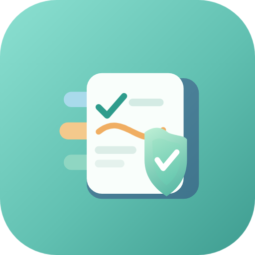

下表逐条列出本应用实际申请的权限（以合并后的 AndroidManifest 为准）及用途。应用未申请 INTERNET 权限，以下权限均不授予联网能力。
| 权限 | 用途 | 说明 |
|---|---|---|
| 通知 POST_NOTIFICATIONS | 「未记账提醒」 | 在你设定的时间（默认 20:30）发送一条「今天还没有记账」的提醒；仅当天没有任何记账记录时才发送，由系统闹钟到点唤醒应用检查，无论应用是否打开。不推送广告或营销内容，可在应用内或系统设置中随时关闭。Android 13 以下系统不需要该权限。 |
| 精确闹钟 SCHEDULE_EXACT_ALARM | 提醒准时触发 | 让系统在设定时刻准时触发提醒，避免被省电策略延后。闹钟由系统托管，应用不常驻后台、不启动后台服务、不联网、不采集信息；「未记账提醒」与「借还还款提醒」相互独立：关闭前者只取消每日未记账提醒，还款提醒由每笔借还账的「是否提醒」单独控制。Android 12 以下系统不需要精确闹钟权限；Android 13 及以上同时声明了系统自动授予的 USE_EXACT_ALARM，以该权限为准。 |
| 精确闹钟（自动授予） USE_EXACT_ALARM | 新装即准时触发 | Android 13 及以上系统提供，安装时由系统自动授予、用户无需手动开启也不可关闭，用于保证 Android 14 及以上新安装的应用仍能准时触发「未记账提醒」与「借还还款提醒」，避免被系统默认拒绝后静默降级成不精确闹钟。仅作用于本机闹钟，不联网、不采集信息、不启动后台服务；Android 12 及以下系统不使用该权限。该权限受 Google Play 闹钟类应用政策限制，本应用仅通过国内安卓应用市场分发。 |
| 开机广播 RECEIVE_BOOT_COMPLETED | 重启后恢复提醒 | 设备重启、系统时间或时区变更、应用更新后，重新排程已设置的提醒；不常驻后台、不联网、不采集信息。 |
| 唤醒锁 WAKE_LOCK | 保证自动备份跑完 | 由 AndroidX WorkManager 等系统组件合并带入，仅用于保证本机自动备份任务能按期完成，不联网、不传输数据。 |
| 网络状态 ACCESS_NETWORK_STATE | 备份调度组件带入 | 由 AndroidX WorkManager 等系统组件合并带入，备份调度组件用它读取网络状态以安排本机备份任务；不授予任何联网能力。应用未申请 INTERNET 权限，无法联网，也不会传输任何数据。 |
| 动态广播保护 DYNAMIC_RECEIVER_NOT_EXPORTED_PERMISSION | 保护内部广播 | 由 AndroidX 组件合并带入的签名级权限，用于保护应用内部动态注册的广播接收器不被外部应用调用，仅在本机使用。 |
本应用明确未申请 INTERNET 权限，不联网，无三方统计 / 广告 SDK。此外亦未申请：精确定位、通讯录、短信、通话记录、麦克风、日历、身体传感器、设备标识（IMEI / OAID / Android ID）、应用列表、外部存储读写（READ / WRITE_EXTERNAL_STORAGE）、常驻后台服务等权限。备份写入用户自选目录通过系统文件选择器（SAF）完成，无需申请存储权限。
本应用未集成任何第三方 SDK，不包含广告 SDK、统计 SDK、崩溃上报 SDK，不与任何第三方共享、转让或公开披露你的信息，也不上传任何数据。
「我的 → 关于 → 支持开发者」仅在本机展示一张随应用内置的静态赞赏码图片，供用户自愿赠与；该行为不解锁任何功能、不提供任何特权，不影响数据与界面。本应用不集成支付接口、不参与交易、不记录赞赏结果，扫码与付款均在微信内完成；本功能不联网、不收集也不上传任何信息。
本应用适合各年龄段用户，且不提供账号注册、不收集个人信息。若使用者为未成年人，建议在监护人指导下使用，并由监护人协助管理账目与备份。
本政策如有更新，我们会在应用内以弹窗或页面形式提示。继续使用即表示你接受更新后的政策。
本隐私政策由「简记本」开发者沙元伟发布，开发者名称与本应用在应用市场公示的上架信息保持一致。如对本政策有疑问，可通过以下联系方式与开发者联系：2759784060@qq.com。
APP 备案信息：本应用为纯本地单机应用，不提供联网服务，按现行规定无需办理 APP 备案；相关信息以应用市场公示为准。